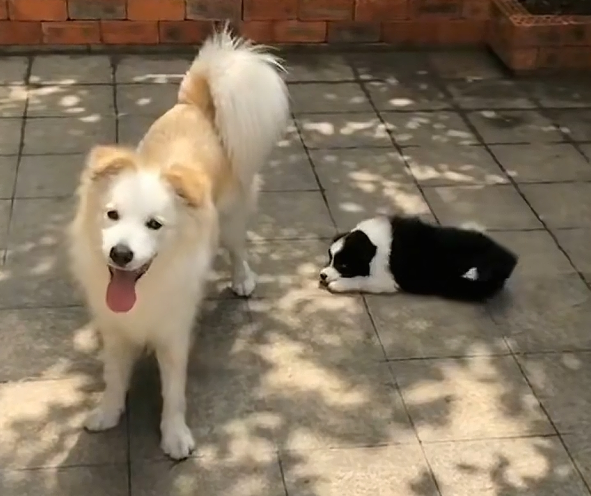
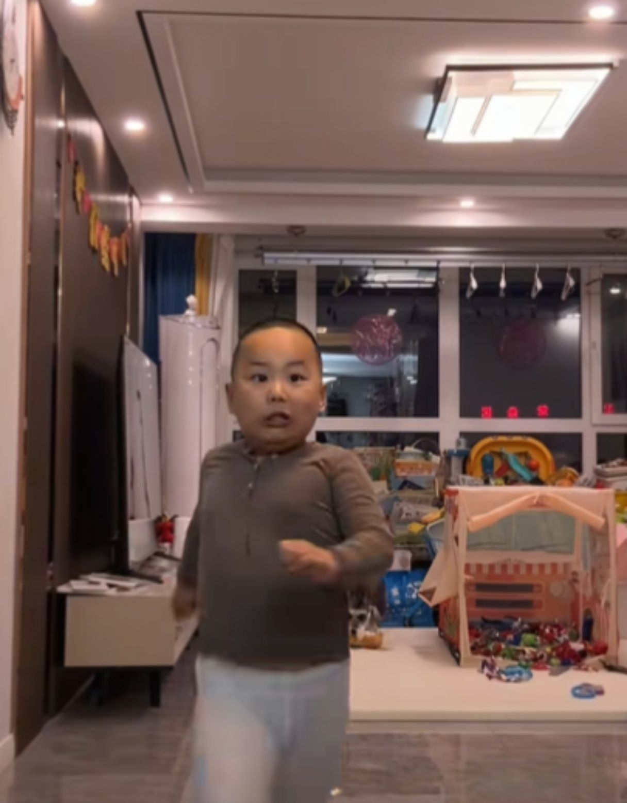
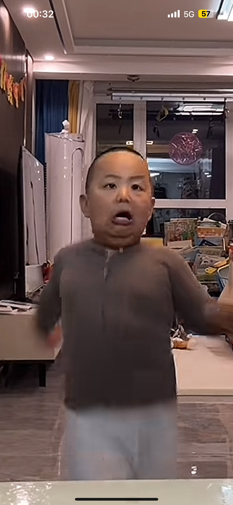
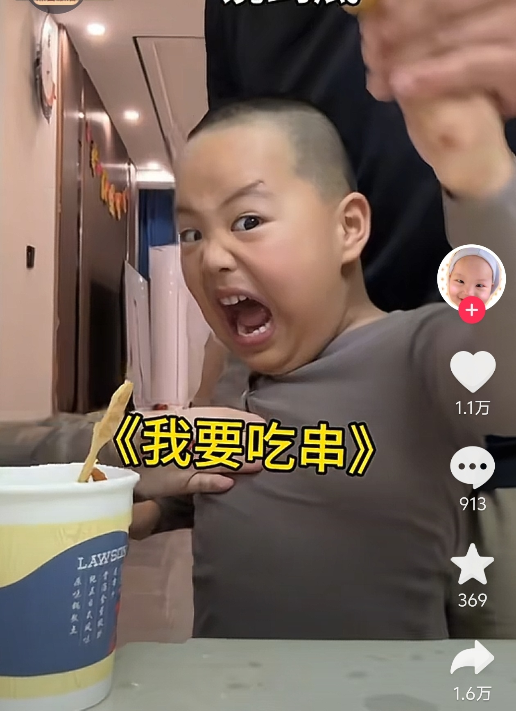
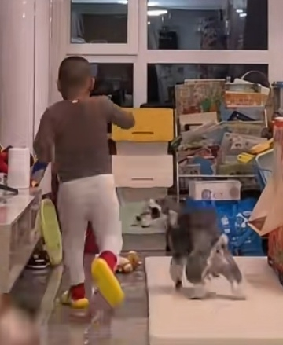
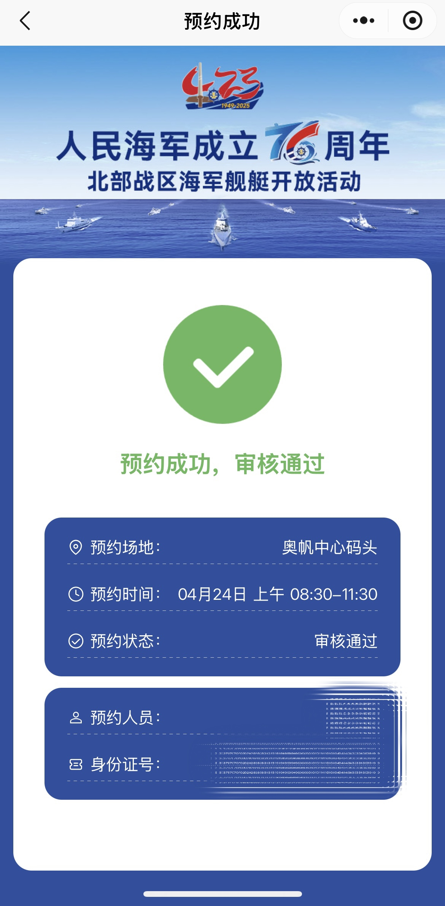
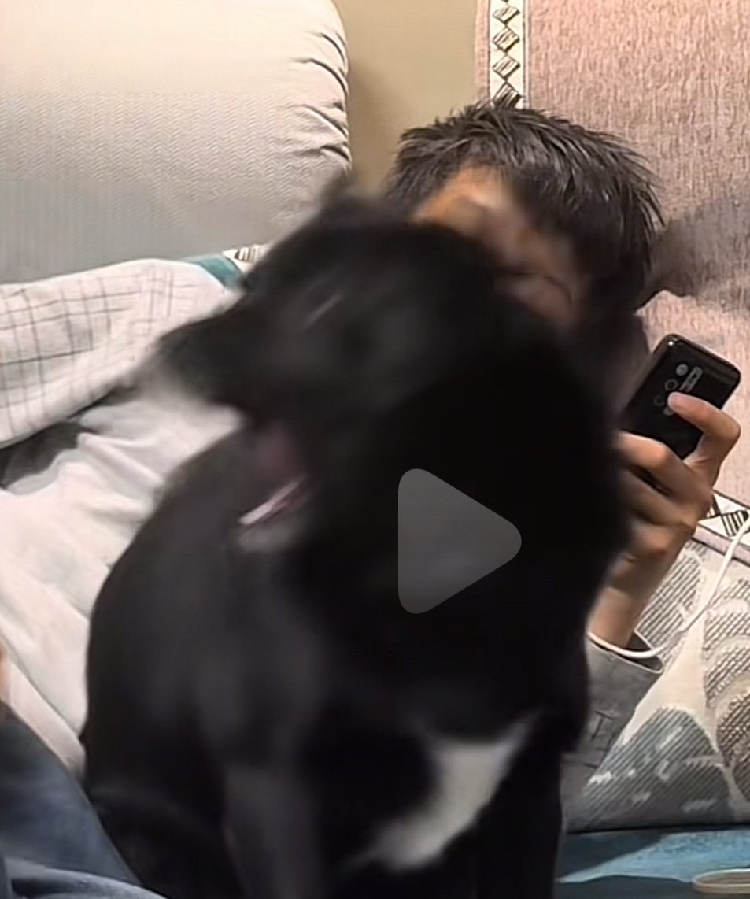
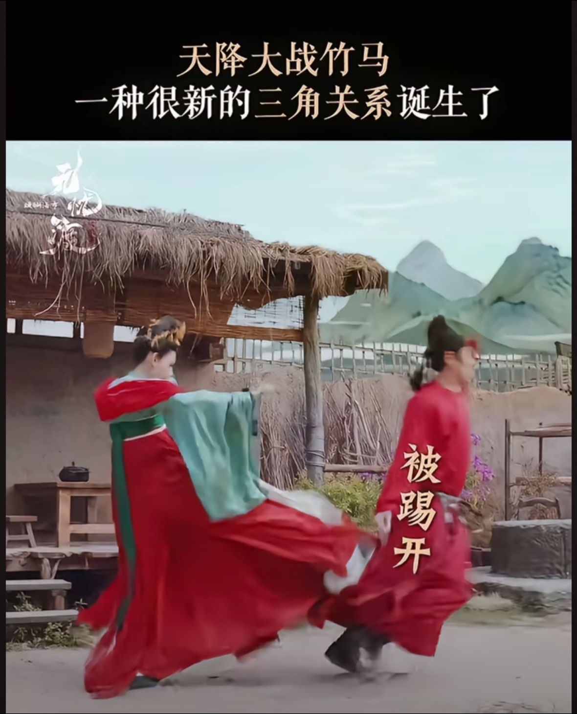

太恐怖了，我姐就是去三亚旅游被人按在水里！我姐当时花了比潜水多一倍的钱才让上岸的！但我姐也不是孬种，上去叫我姐夫联合揍了一通[憨笑][赞]
三亚文旅评论区已经关了
你敢相信这是可乐[捂脸] 
可乐最近可能比较郁闷，隔壁小食堂雇了个保安[尬笑]
再见养蜜蜂，小灶我来了[呲牙]
能不能来一期假装出门，然后回来抓住可乐的视频[看]
脑子还没反应过来，身体四个pop已经做好了[憨笑][玫瑰]
为什么我的whiplash不闪啊[流泪][流泪]
已经摸上脖子了
我一个峰峻妹都有下意识动作我都跳了[微笑]
@执风 我还没反应过来是whiplash身体各个部位就已经开始跳了[微笑]
这么高质的视频居然不火？？？！
为啥李老板总输[捂脸]他就爱出布，通过这个小游戏后来就学聪明了，就会来回变换了，有输有赢李老板知道，有时候需要一些挫败感，不能什么都可他来，让他要有游戏规则感，赢得起也输得起
这情绪也太稳定了，要是别的小孩早都赖叽了[大笑]
他是怎么做到小小年纪看起来比爸爸还成熟的[泪奔][泪奔][泪奔] 
男孩 : 挺住关东煮！挺住！我就赢我马上就赢！你要挺住啊
坏了！最后一串也进老登嘴里了 
孩子吃了一晚上关东煮，瘦了半斤
看吧孩子急的 
以后他只买一个氧气机，让你俩石头剪刀布轮着吸[看]
狗跟着忙活够呛 狗捞着啥了 
狗在想：这三人有毛病，一会跑一会跑的。
这孩子情绪真稳定[憨笑]你俩是真欺负人[捂脸]
一个被废的皇帝，居然没把他抄家充当军费。刘病已霍光还是太体面了。
跟着音乐节奏🦌
有时候分不清这是抖音还是暗网
又在打瓦了[鼓掌][鼓掌][鼓掌]
打瓦兄弟 唱的好听 表情自然
大家都是哪一句出来的[耶][耶]
暗网管理员看完自杀了[耶][赞]
正常做法是会有人拿喇叭对着队伍喊机票超售，有没有人愿意改签明日航班，航空公司将给予1000元现金红包，并安排酒店食宿
你们真的不觉得婴儿身上臭臭的吗，为什么会觉得奶香，我凑近任何一个都觉得臭
这种才是真需要科普，所有人都以为婴儿的脚干净香。[赞][赞][赞][赞][赞][赞]
深圳落地抽[捂脸]
我隔壁家的经常带去深圳打[看]
不要信，一般来说回到家就可以打[捂脸]
不会真有香港父母带孩子去深圳打吧[黑脸]
台湾统一后 开瓶1985年的五粮液[强]

普通人是入手055还是052？建议一下[抱拳]
真羡慕你们，不像我，只能上舰看看[展开说说] 
让我们荡起双桨，船头架上机关枪[捂脸][捂脸][捂脸]
不好好在家孵蛋。出去染头发。
这才是最原本的抖音，谁都可以记录生活，那怕杀手[微笑]
你的飞刀水平很好，帮我杀个人，北镇抚司小旗官—靳一川
NBA最可惜就是他了 当年的罗斯多牛逼啊
蜕皮了吗要这蜘蛛[泣不成声]
世人都说秦始皇残暴，但从他使用兵马俑代替人马殉葬，我不相信他的残暴，我觉得他是个善良的人。
艾特一只狗，让他觉得莫名其妙
无论身在何处，心都会在某个瞬间回到家乡[抱抱你]
君看今日树头花，不是去年枝上朵。
心随天地走，意被牛羊牵
有时候看到抖音很多普通人写一些小故事，有些很有灵气的文字，还是会很有感触，以前的我好像也能写出一些纯真的文字，读了大学我的心好像死掉了[流泪]
“郎心自有一双脚 隔山隔海会归来”
怪不得叶老师讲过哀莫大于心死，而人死亦次之
这你得找二手月季啊，唱一宿五万呢[看]
这情商也太高了，我都是大喊着打死我吧[尬笑]
此招虽险，胜算却大
啊？我都是硬挺着一副死猪不怕开水烫的样子
可惜我小时候只会说：有本事打死我
对不起我的面子不允许我这么干[泪奔]
[看]以前要学会这些话，也不至于被揍的鼻青脸肿的了
接通的一刻 它喊 妈妈[疑问]
父母同意 五一结婚
明天我结婚 是初恋哦[耶]
课代表来了！ 总结：一休息，二减负，三多嚼 1. 第一招：让脾胃休息，少吃一顿饭，给脾胃休息的时间和空间 2. 第二招：减负，三减，减生冷减寒凉减产气（特别十字花科） 3. 第三招，细嚼慢咽。每口嚼20下
这个时候就是二胎的意义了
听说二哥的老人机可以刷抖音[黑脸]
二哥用感天动地的泪水带你回家， 糖豆用张牙舞爪的态度反击被撸[捂脸]
二哥：你这个良心的。。。[捂脸] 
边牧车友会你有吗？[尬笑]昨天看见他们出去聚会了
这有啥的，跟两个面包车撞了是一个概念
为啥不掉称[微笑][赞]早餐小块玉米 一个清水蛋 中午一碗河粉 晚上一根水果黄瓜 一个西红柿
减肥之后，发现胃都变小了，想多吃都吃不下
一句话证明看过无忧渡[耶]
我要被一个强壮的轿夫迷死了[舔屏]
我不行了 脸都笑烂了 哈哈哈哈哈 
我真的等不到六点了，在线求加更
Read more: